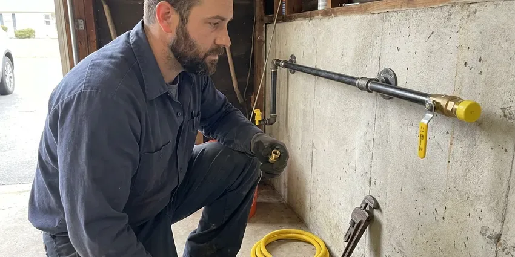

Sewage Ejector Pump Installation in Dunwoody, GA
HGR Plumbing focuses on sewage ejector pump installation throughout Dunwoody, GA, making sure your below-grade plumbing operates efficiently and reliably.
- Code Compliant Work
- Honest Pricing
- Guaranteed Work
- Licensed Georgia Plumbers
Professional Sewage Ejector Pump Installation in Dunwoody, GA.
Let our licensed plumbers provide a lasting solution for your basement drainage.
Professional Sewage Ejector Pump Installation in Dunwoody, GA
HGR Plumbing installs sewage ejector pumps for any fixture that sits lower than your main sewer or septic line. We set a sealed basin below the floor, install a pump rated for solids, add a check valve and gate valve, and vent the basin through the roof. Every system is tested with water before we leave.
Our expertise includes:
- Ensuring proper pit sizing and venting for new installations.
- Sealed basin installation with gas-tight lids and separate venting
- Solids-handling ejector and grinder pump sizing and setup

Additional Plumbing Installation Services in Dunwoody, GA
We install water heaters, pumps, lines, and fixtures across Dunwoody, GA with precision workmanship that meets every local code.


Customers
Why Choose HGR Plumbing for Sewage Ejector Pump Installation in Dunwoody, GA?
Choosing the right professionals for sewage ejector pump installation is crucial for long-term reliability and code compliance. We make sure every part of your new pump system is installed to strict standards.
- Clean & Tidy, Our technicians keep a clean workspace and leave your property tidy after installation.
- Reliable Brands, We install high-quality, durable sewage ejector pumps from trusted manufacturers known for their longevity.
- Sealed System, Gas-tight basins and proper venting keep sewer odors out of your home.
Citywide Coverage
HGR Plumbing serves every neighborhood in Dunwoody for sewage ejector pump installations. Whether you are in a historic district or a newer development, our licensed plumbers are ready to assist you.
Experienced Team
Each technician at HGR Plumbing is well versed in the complexities of below-grade plumbing, from excavation and piping to electrical connections, delivering expert service for your Dunwoody home.
Safety-First Approach
Pumps are wired to a dedicated, properly protected circuit and installed with a check valve and full-port shutoff. Permits and inspections are handled for each new ejector installation.
Trusted Certified Dunwoody Plumbing Services Professionals
At HGR Plumbing, we take pride in providing licensed, certified plumbing services throughout Dunwoody, GA. Backed by recognized industry credentials, our experienced plumbers combine technical skill with genuine customer care. Whether it is repair, installation, or maintenance, we follow strict safety and quality standards to deliver long-lasting results you can trust.
Call Us Now PHCC Plumbing Contractor Recognition
PHCC Plumbing Contractor Recognition Better Business Bureau (BBB) Accreditation
Better Business Bureau (BBB) Accreditation Angi Certified Pro
Angi Certified Pro ISO 9001 Quality Management Certification
ISO 9001 Quality Management CertificationDependable Sewage Ejector Pump Installation Services in Dunwoody, GA
Liberty Pumps Installation in Dunwoody
HGR Plumbing installs Liberty sewage ejector pumps in Dunwoody. Liberty Pumps is a trusted name in the industry, known for robust construction and reliable performance. We offer various models to suit different needs, from residential basement applications to light commercial use. Our technicians are experienced with Liberty's product line, so your new pump is installed to manufacturer specifications for efficiency and a long service life. We can help you choose the best Liberty model for your wastewater volume and lift requirements.

Laundry and Wet Bar Ejector Pumps in Dunwoody, GA
Below-grade laundry rooms and wet bars produce gray water that still needs to be lifted to the sewer line. A smaller ejector or laundry tray pump can handle washer discharge and sink drainage. We install a lint filter where needed to guard the pump. These systems are compact and can usually be installed without major floor demolition.
Ejector Pump Replacement in Dunwoody
Ejector pumps usually last about 7 to 10 years, depending on use and what goes down the drains. Signs of trouble include constant running, frequent cycling, odors and slow fixture drainage. We remove the failed pump, inspect the basin, check valve and float, and install a new pump from brands like Zoeller, Liberty Pumps or Wayne. The system is tested with water before we finish.
Zoeller Ejector Pump Installation in Dunwoody, GA
When you need a dependable Zoeller ejector pump installed in Dunwoody, GA, HGR Plumbing is your go-to plumbing expert. Zoeller pumps are valued for their durability and efficiency, making them a popular choice for homeowners and businesses alike. Our team handles the complete installation of Zoeller sewage ejector pumps, including pit setup, discharge piping and electrical connections. We make sure your Zoeller pump operates quietly and effectively, giving you peace of mind for your below-grade plumbing.
Zoeller Sewage Ejector Pump Installation in Dunwoody
As a trusted brand in the industry, Zoeller pumps are known for their reliability and long lifespan. HGR Plumbing installs a full range of Zoeller sewage ejector pumps in Dunwoody, from residential models to more powerful commercial units. Our technicians are highly familiar with Zoeller's specifications, ensuring correct sizing, proper wiring and a well-planned discharge line for efficiency and longevity. Investing in a quality brand like Zoeller, installed by professionals, means fewer worries about wastewater removal.
Sewage Ejector Pump Basin & Pit Installation in Dunwoody
The basin and pit are core components of any sewage ejector pump system. HGR Plumbing provides expert installation of the sewage ejector pump basin and pit in Dunwoody, with proper sizing and sealing. Correct pit depth and diameter are crucial for good pump operation and to prevent early wear. We also seal the basin properly to contain odors and keep groundwater out. Homes are a mix of slab, crawlspace, and basement foundations, and crawlspace homes make most supply and drain repairs easier to reach. A well-installed pit is key to longevity.
Residential Sewage Ejector Pump Installation in Dunwoody
HGR Plumbing focuses on installing sewage ejector pumps for residential properties in Dunwoody. These pumps are crucial for basement bathrooms, laundry rooms or any plumbing fixtures located below the main sewer line. We make sure the pump's capacity matches your household's demands, preventing potential backups. Our service includes selecting the right basin size, setting up proper venting and making solid electrical connections. We work with common residential pump brands like Liberty and Zoeller, known for their reliability.

Cost-Effective Sewage Ejector Pump Upgrades in Dunwoody, GA
If your existing sewage ejector pump is old, inefficient or undersized for your current needs, HGR Plumbing offers cost-effective upgrade options in Dunwoody, GA. Upgrading to a more powerful or energy-efficient model can save you money on utility bills and provide greater peace of mind. We assess your current system and recommend modern pumps with features like integrated alarms or longer warranties, making a smart investment that improves your home's plumbing and prevents future breakdowns. This can be more economical than repeated repairs.
Sewage Ejector Pump Installation Near Me in Dunwoody, GA
Our commitment to the Dunwoody community means we understand the local plumbing infrastructure and requirements for below-grade installations. Trust HGR Plumbing for dependable, code-compliant sewage ejector pump solutions close to home.
If your ejector alarm is sounding and you are searching for sewage ejector pump installation near me, call us right away. We respond fast to pump failures and carry common pumps on our trucks. Fast service helps prevent backups and damage.
HGR Plumbing at a Glance
- Licensed and insured plumbers serving Dunwoody, GA
- Same-day appointments and 24/7 emergency response
- Upfront, flat-rate pricing before work begins
- 4.9-star rated by 357+ Georgia customers
Dunwoody Map
Dunwoody Information
- Population
- 51,713
- Area codes
- 470/770/678
- Service area
- Dunwoody and communities within 40 miles
- Nearby
- Sandy Springs, Brookhaven, Roswell, Johns Creek
In Dunwoody, GA, homes with basements or lower levels with plumbing need a dependable sewage ejector pump to prevent messy backups and keep wastewater moving, especially when heavy rain raises groundwater levels.
Expert Services
Trust our professionals for reliable HGR Plumbing solutions in Dunwoody, GA.
Our Specialized Plumbing Services in Dunwoody, GA
At HGR Plumbing, we provide a complete range of plumbing services across Dunwoody, GA. From leak detection to full system installations, our team ensures fast, precise, and affordable service for both residential and commercial properties. Explore our core services below:


How We Install Sewage Ejector Pumps in Dunwoody, GA
At HGR Plumbing, we follow a clear and efficient process for sewage ejector pump installation to deliver a smooth and successful project.
Request a Quote
Call (770) 470-3778 or fill out our online form to schedule an appointment. We will discuss your needs and provide a clear, upfront estimate for your sewage ejector pump installation project.
Site Assessment
Our licensed plumber will visit your Dunwoody home to evaluate the installation site, determine the best pump type and size and plan for proper piping and electrical connections.
Professional Installation
We handle the complete installation, including excavation for the basin, setting the pump, connecting discharge lines, installing check and gate valves and confirming all electrical work meets code.
Frequently Asked Questions About Sewage Ejector Pump Installation in Dunwoody
The cost for sewage ejector pump installation in Dunwoody typically ranges from $2,500 to $5,000. This price can vary based on the pump type, basin size, complexity of the plumbing and electrical work and whether an existing system needs to be removed. We provide a detailed quote after assessing your project.
Installing a sewage ejector pump is a complex job that involves plumbing, electrical and sometimes excavation work. It requires specialized knowledge to get sizing, venting and code compliance right. We strongly recommend hiring a licensed professional like HGR Plumbing to avoid costly errors, safety hazards and potential code violations.
New ejector installations usually require a plumbing permit and inspection. Straight pump replacements may not, and we confirm local requirements for each job.
With proper installation and regular maintenance, a high-quality sewage ejector pump can last 7 to 15 years. Factors such as usage frequency, the type of waste it handles and water quality can influence its lifespan. Annual inspections can help extend its longevity.
A sump pump is designed to remove groundwater from a basement or crawl space, preventing flooding. A sewage ejector pump, however, is built specifically to handle wastewater containing solids from toilets, sinks and showers in areas below the main sewer line. They are not interchangeable and serve separate purposes.
Most ejector pumps last 7 to 10 years with normal use. Flushing wipes or other non-flushable items can shorten that life considerably.
A well-maintained sewage ejector pump typically has a lifespan of 7 to 10 years, though some higher-quality units can last longer. Factors like frequency of use, quality of installation and the type of waste being pumped can affect its longevity. Regular maintenance can help lengthen its operating life.
Regular maintenance for a sewage ejector pump involves periodically checking the basin for debris, confirming the check valve works correctly and testing the float switch. It is also wise to avoid flushing non-biodegradable items. HGR Plumbing offers maintenance services to keep your pump running efficiently and prevent unexpected breakdowns.
What People Are Saying About Our Plumbing Experts?

Emily R.
I called HGR Plumbing for plumbing repair, and the technician was fast, polite, and thorough. They explained the problem clearly and fixed it the same day. I will definitely hire them again. Highly recommended!
Plumbing Repair · Johns Creek, GA
James P.
Our commercial plumbing system had a leak under the sink, and HGR Plumbing handled it professionally. The plumbers arrived quickly and restored everything without disruption to our customers.
Commercial Plumbing · Johns Creek, GA
Sofia M.
Two new toilets installed in one visit, no mess left behind, and the tech even adjusted a faucet he noticed was dripping. Fair pricing and really friendly.
Toilet Installation · Brookhaven, GA
Daniel K.
A pipe burst at 11 pm and they actually answered. The plumber showed up within the hour, shut everything down, and had us back to normal the next morning. Could not ask for more.
Emergency Plumbing · Alpharetta, GA
Patricia H.
We had a slab leak that two other companies could not find. HGR Plumbing located it in under an hour, explained our options, and the price matched the quote to the dollar.
Slab Leak Repair · Brookhaven, GARobert G.
The trenchless sewer replacement saved our front yard. They walked us through the camera inspection footage first so we knew exactly what we were paying for.
Sewer Line Replacement · Sandy Springs, GA